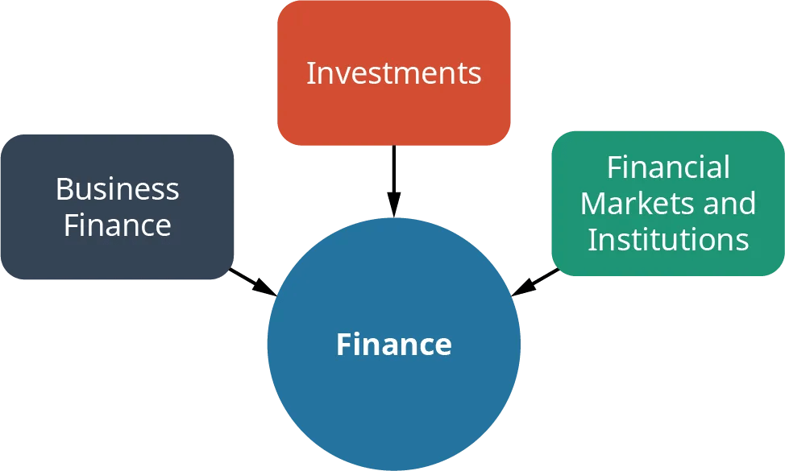
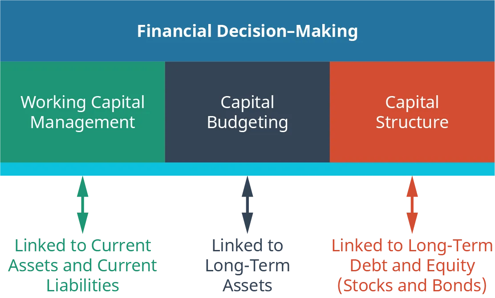
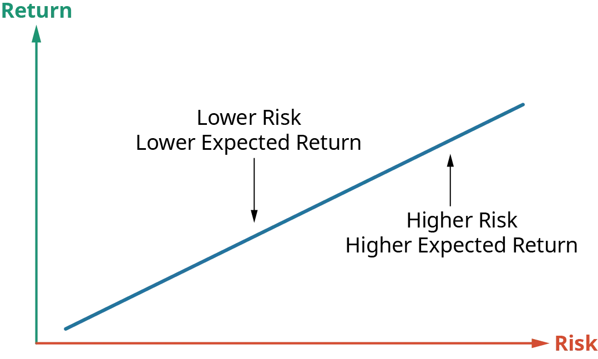
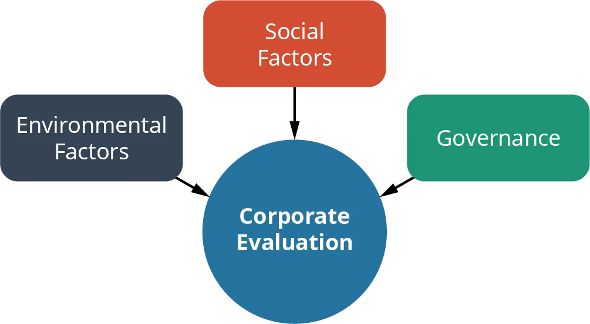

1 Úvod do financí a struktura firmy
Studijní materiály
- Dahlquist, J. R., &; Knight, R. (2022). Principles of finance. OpenStax, Rice University. https://openstax.org/details/books/principles-finance
- Chapter 1 - Introduction to Finance
- Chapter 2 - Corporate Structure and Governance
Výstupy z učení:
- Pochopit základní principy financí.
- Porozumět finančnímu rozhodování a strategickému plánování.
- Prozkoumat možnosti uplatnění v oblasti financí.
- Uvědomit si dopady mikroekonomických a makroekonomických faktorů.
- Porozumět používání finančních nástrojů a časové hodnoty peněz.
- Rozpoznat důsledky různých podnikových struktur na finanční řízení firmy.
- Porozumět vztahu mezi akcionáři a vedením společnosti.
1.1 Úvod do financí
1.1.1 Co jsou finance?
Definice financí
- Finance jsou vědou o řízení, pohybu a získávání peněz.
- Jde o pochopení způsobu získávání a využívání peněžních prostředků.
- Základním principem je porozumění vztahu mezi rizikem a výnosem.
- Finance jsou také nástrojem, který nám může pomoci lépe se rozhodovat.
- Finance se dělí na tři základní oblasti: podnikové finance, investice a finanční trhy a instituce.

- Podnikové finance:
- Finance podniku se zaměřují na maximalizaci hodnoty podniku v rizikovém prostředí.

- Investice:
- Investice jsou produkty a procesy používané k vytváření bohatství (dosažení výnosu za určitého rizika).
- Mezi investice patří např.: akcie, dluhopisy, futures, opce, podílové fondy, ETF, reálná aktiva atd.
- Finanční trhy a instituce:
- Finanční trhy a instituce zahrnují firmy a regulační orgány, které dohlížejí na finanční systém.
- Usnadňují investiční postupy a zajišťují bezpečnost investorů i celého odvětví.
- V USA např.:
- Securities and Exchange Commission (SEC)
- Financial Industry Regulatory Authority (FINRA)
- Securities Investor Protection Corporation (SIPC)
- V Evropě např.:
- The European Securities and Markets Authority (ESMA)
- Centrální banky jednotlivých zemí obvykle slouží jako hlavní orgán dohledu nad finančním trhem v dané zemi.
- Finanční odvětví prochází neustále významným vývojem díky novým technologiím, inovacím, konkurenci a změnám v regulacích.
1.1.1.1 Proč studovat finance
- Finance jsou v dnešním světě důležité pro ekonomické operace.
- Usnadňují například vlastnictví nemovitostí a bezhotovostní transakce.
- Silný a nezávislý finanční systém je pro ekonomiku založenou na kapitálu nezbytný.
- Studium financí otevírá řadu profesních příležitostí.
- Jedná se o kritický nástroj rozhodování vyžadující analytické myšlení.
- Znalost financí a finančních trhů rozšiřuje vaše investiční příležitosti.
1.1.1.2 Riziko a výnos ve financích
- Vyšší riziko vede k vyšším očekávaným výnosům, přičemž riziko je v podstatě nejistota.
- Finance se snaží riziko kvantifikovat, aby pomohly při našem rozhodování.
- Jednotlivci se obecně vyhýbají riziku (jsou rizikově averzní), což znamená, že za podstoupení většího rizika očekávají vyšší výnosy.
- Finanční riziko se skládá z několika složek včetně rizika defaultu, inflačního rizika, diverzifikovatelného (nesystematického) rizika, nediverzifikovatelného (systematického) rizika a politického rizika, atd.

1.1.2 Role financí ve firmě
- Finanční plánování je klíčové pro zajištění přehledu o minulých, současných a budoucích finančních potřebách organizace a pro dosažení obchodních cílů.
- Dobré finanční plánování zahrnuje minulé, současné a výhledové výkazy zisků a ztrát, výkazy peněžních toků, rozvahy, prognózy a nástroje finanční analýzy, jako je analýza poměrových ukazatelů.
- Rozpočtování (budgeting) je klíčovou součástí finančního plánování, které se zaměřuje na výši, zdroje a použití peněžních prostředků.
- Finanční plánování pomáhá řídit změny rozpočtu, orientovat se v odchylkách od očekávaných výsledků a slouží jako základ pro budoucí rozpočty.
1.1.3 Význam dat a technologií
- Finanční údaje jsou klíčové pro lepší obchodní a finanční rozhodování a alokaci zdrojů.
- Mezi základní typy finančních údajů patří výkaz zisků a ztrát, výkaz peněžních toků a rozvaha.
- Kromě interních údajů firmy lze využít i externí údaje, jako jsou průzkumy mezi zákazníky a dodavateli, průzkumy trhu, dohody s věřiteli a makroekonomické údaje.
- Využití dat sahá od měření dopadu obchodních rozhodnutí až po strategické plánování a motivaci zaměstnanců.
1.1.4 Kariéra v oblasti financí
- Kariéra v oblasti financí nabízí spoustu příležitosti se prognózou růstu počtu pracovních míst.
- Dovednosti v oblasti financí jsou použitelné v celé řadě oblastí včetně managementu, analýzy a logistiky.
- Mezi tradiční finanční pozice patří finanční manažeři, pracovníci v oblasti investičních vztahů, rozpočtový analytik, úvěrový analytik, finanční analytik, osobní finanční analytik, finanční specialista, úvěrový pracovník, pojišťovací agent, účetní, auditor.
- Finanční analytici, nezbytní pro finanční prognózy a průzkum trhu, potřebují různorodé dovednosti zahrnující práci s tabulkovými procesory, finanční modelování, a porozumění obchodním procesům.
- Podnikoví analytici se více zaměřují na strategické myšlení, vývoj procesů a budování týmu, pomáhají při formulování strategie a řešení problémů pomocí přístupů založených na datech.
- Více informací o možné kariéře v oblasti financí. na webových stránkách Balance Careers.
1.1.5 Trhy a účastníci trhu
- Primární trh je trh s “novými” cennými papíry, jako jsou například počáteční emise acií (Initial Public Offering, IPO) a nabídka sezónních akcií (Seasoned Equity Offering, SEO), které poskytují přímé peněžní prostředky firmám.
- Sekundární trh je trhem “již existujících” cenných papírů, na kterém se obchoduje mezi investory a poskytuje přehled o vnímání hodnoty firmy.
- Účastníci trhu, včetně dealerů, brokerů a finančních zprostředkovatelů, hrají roli při usnadňování finančních transakcí.
- Dealeři vlastní cenné papíry, které nakupují nebo prodávají, a vydělávají na obchodování s nimi (na rozdílu v cenách).
- Brokeři zprostředkovávají transakce mezi kupujícími a prodávajícími, přičemž obvykle vydělávají na provizi z prodeje.
- Finanční zprostředkovatelé, jako jsou komerční banky nebo investiční společnosti, umožňují snazší obchodování mezi transakčními stranami.
- Finanční zprostředkovatelé zvyšují efektivitu, poskytují úspory z rozsahu, specializované znalosti a mají zásadní význam pro tržní ekonomiku.
1.1.6 Mikroekonomické a makroekonomické faktory
- Finance spojují ekonomii a účetnictví.
- Využívají ekonomickou teorii, empirické důkazy a účetní údaje k přijímání obchodních rozhodnutí.
- Ekonomie studuje alokaci omezených zdrojů a dělí se na mikroekonomii a makroekonomii.
- Mikroekonomie se zaměřuje na rozhodování jednotlivých subjektů, analyzuje podněty, chování, spotřebu, nabídku a poptávku.
- Pomáhá při finančních prognózách, plánování a sestavování rozpočtů.
- Makroekonomie zkoumá skupinová rozhodnutí a zkoumá prvky, jako je inflace, úrokové sazby, nezaměstnanost, hospodářský růst, akciový trh a fiskální politika vlády.
- Zahrnuje širší proměnné, které by měly být zahrnuty do finančních prognóz.
- Aby mohli finanční manažeři efektivně směřovat ke strategickým cílům, potřebují jak mikro (zdola nahoru, taktický), tak makro (shora dolů, strategický) pohled.
1.1.7 Finanční nástroje
1.1.7.1 Peněžní trhy
- Na peněžním trhu se obchoduje s krátkodobými (méně než jeden rok), nízkorizikovými a vysoce likvidními cennými papíry.
- Míra bankrotu je minimální a nástroje lze rychle prodat na sekundárním trhu.
- Finanční instituce, podniky a vlády využívají peněžní trh pro potřeby krátkodobých výpůjček a/nebo úvěrů.
- Transakce jsou obvykle velké, přesahující 100 000 USD.
- Státní pokladniční poukázky (treasury bills, T-bills) jsou krátkodobé dluhové nástroje emitované vládou USA, považují se za téměr bezrizikové.
- Úrokové sazby patří mezi významný nástroj měnové politiky.
1.1.7.2 Kapitálové trhy
- Na kapitálovém trhu se obchoduje s dlouhodobějšími (delšími než jeden rok) finančními nástroji s různým rizikem defaultu a méně jistou likviditou.
- Nástroje se dělí na dluhové nástroje (dluhopisové trhy) a majetkové cenné papíry (akciové trhy).
- Státní i korporátní dluhopisy s delší splatností určené pro dlouhodobější financování.
- Akcie představují vlastnictví společnosti.
- Peněžní toky z akcií jsou vzhledem k jejich nepředvídatelnosti více nejisté a rizikové než peněžní toky z dluhopisů.
- S akciemi lze obchodovat na organizovaných burzách cenných papírů nebo na mimoburzovním trhu.
1.1.8 Časová hodnota peněz
- Volba mezi úsporami a výdaji je v podstatě volbou mezi současnou a budoucí spotřebou.
- Toto rozhodnutí zahrnuje zvažování krátkodobých, střednědobých a dlouhodobých cílů.
- Časová hodnota peněz zahrnuje volbu poměru výnosu a rizika.
- V podnikání jsou důležité tři typy hodnoty: účetní hodnota (historické náklady), tržní hodnota (cena, kterou platí spotřebitelé) a ekonomická hodnota (to, co jsou spotřebitelé ochotni zaplatit).
1.2 Struktura a řízení firmy
- Podnikatelské cíle zahrnují plnění osobních finančních cílů a u veřejně obchodovaných společností zvyšování hodnoty společnosti pro akcionáře.
- Akcionáři jsou jednotlivci, kteří usilují o návratnost investic pro své osobní dlouhodobé finanční cíle.
- Firmy se zaměřují na finanční i nefinanční cíle, včetně rozšiřování prodeje, spokojenosti zákazníků a vývoje produktů.
- Hodnota aktiv je určena současnou hodnotou budoucích peněžních toků.
- Maximalizace bohatství vlastníků/akcionářů by měla zohledňovat dlouhé období.
1.2.1 Hlavní cíl finančního managementu
- Maximalizovat fundamentální hodnotu existujících akcií (maximalizovat hodnotu firmy v dlouhém období).
- Maximalizace hodnoty firmy vyžaduje, aby podnik byl efektivní, poskytoval kvalitní produkty a služby za co nejnižší náklady.
- Z dlouhodobého hlediska je pro hodnotu podniku prospěšné dobře se starat o své zaměstnance (kvalitní pracovní síla).
- Důležitá je také dobrá pověst.
- Při dodržování zákona a základní etiky je tento cíl vhodný pro celou společnost.
1.2.2 Typy obchodních společností
- Podrobnosti v zákoně č. 90/2012 Sb.,Zákon o obchodních společnostech a družstvech (zákon o obchodních korporacích)
- Organizace musí při volbě své struktury vyhodnotit všechna pro a proti, včetně možnosti získávat finanční prostředky, dopadů zdanění a likvidity.
- Učebnice jsou z pravidla psané z pohledu velkých akciových společností, které jsou veřejně obchodované.
- Většinu metod lze však aplikovat obecně i na malé firmy a jiná vlastnická uspořádání.
1.2.2.1 Akciová společnost
- Právnická osoba.
- Majetek je rozdělen na určitý počet akcií (podílů na majetku).
- Společnost za svoje závazky odpovídá celým svým majetkem.
- Akcionář za závazky společnosti neručí a ani není povinen uhradit případnou ztrátu.
- Umožňuje oddělení vlastníků od managementu a díky tomu může fungovat dlouhodobě i když se vlastníci nebo management mění.
1.2.2.2 Ostatní typy obchodních společností
- Veřejná obchodní společnost - společnost alespoň dvou osob, které se účastní na jejím podnikání nebo správě jejího majetku a ručí za její dluhy společně a nerozdílně celým svým majetkem.
- Komanditní společnost - společnost, v níž alespoň jeden společník ručí za její dluhy omezeně (tzv. „komanditista“) a alespoň jeden společník neomezeně (tzv. „komplementář“).
- Společnost s ručením omezeným - Společnost odpovídá za porušení svých závazků celým svým majetkem, společníci pak společně a nerozdílně ručí za závazky společnosti jen do výše, v jaké nesplnili vkladové povinnosti podle stavu zapsaného v obchodním rejstříku v době, kdy byli věřitelem vyzváni k plnění.
1.2.4 Problém zastoupení
- Jedná se o konflikt zájmů, který nastává v situaci, když se od člověka (nebo skupiny lidí) očekává, že bude jednat v nejlepším zájmu někoho jiného.
- Ve světě financí se jedná zpravidla o vztah managementu a akcionářů, ale třeba i akcionářů a ostatních zainteresovaných stran (např. zaměstnanců).
- Problémy nastávají, když manažer využívá své postavení k osobnímu prospěchu, místo aby jednal v nejlepším zájmu akcionářů.
- Od managementu se očekává, že se bude snažit maximalizovat bohatství akcionářů a nikoliv svoje vlastní bohatství.
- Problém dále umocňují asymetrické informace mezi stranami.
- Stále častěji se využívá k hodnocení společností rating v oblasti životního prostředí, sociální oblasti a správy a řízení (ESG), které poskytují organizace třetích stran.
- Vysoké hodnocení ESG může naznačovat proaktivní řízení a potenciální dlouhodobou hodnotu.

1.2.4.1 Náklady problému zastoupení
- Pokud management maximalizuje vlastní bohatství na úkor akcionářů vznikají ve firmě neefektivnosti.
- Tento problém nelze úplně odstranit, ale dá se minimalizovat.
- Snaha o řešení tohoto problému může vyžadovat další vynaložené náklady.
1.2.4.2 Možná řešení
- Snaha zabránit problému právní cestou (např. na základě smluv).
- Kontrola a dohled.
- Motivační nastavení odměňování (např. spojené s cenou akcie).
- Možnost odvolat management.
- Celkově nastavení corporate governance, atd.
1.2.5 Interakce s investory, zprostředkovateli a dalšími účastníky trhu
- Vztahy s investory (Investor Relations, IR) jsou dílčím útvarem podnikových vztahů s veřejností, jehož cílem je udržovat otevřené vztahy s akcionáři.
- IR, které mají přísné regulační povinnosti, vyžadují úzkou spolupráci s právními a účetními odděleními.
- K povinnostem patří organizování schůzek akcionářů, šíření finančních údajů a řízení otázek zveřejňování finančních informací.
- Pravidelné čtvrtletní zprávy o výsledcích hospodaření zajišťují transparentnost pro investiční komunitu.
- Každoroční setkání akcionářů a investiční konference jsou důležité pro efektivní vztahy s investory.
1.2.6 Společnosti na domácích a globálních trzích
- Společnosti působící především v USA, dodržují americké zákony o účetnictví a cenných papírech a při finančním výkaznictví používají obecně uznávané účetní zásady (Generally Accepted Accounting Principles, GAAP).
- V Evropské unii a některých dalších zemích Asie nebo Jižní ameriky se finanční výkaznictví obvykle řídí Mezinárodními standardy účetního výkaznictví (International Financial Reporting Standards, IFRS).
- Přestože jsou GAAP a IFRS navrženy tak, aby poskytovaly objektivní finanční výkaznictví, významně se liší, což má dopad na oblasti, jako je účtování zásob, konsolidace dceřiných společností a vykazování menšinových podílů.
- Při analýze společnosti je potřeba brát v úvahu zda se používá GAAP nebo IFRS.